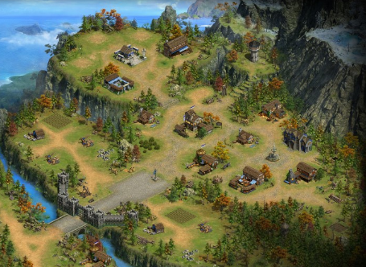
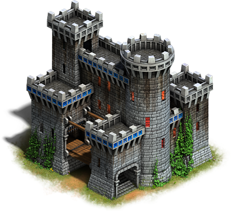
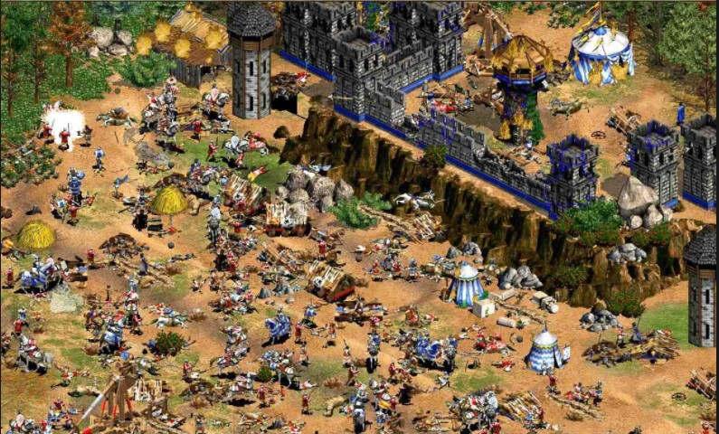

侦察兵

1
2
3
4

6
7
5
8
9
侦察兵初始在主城旁边，侦察兵就是玩家初始的将领。
弹出简单的剧情介绍告知，玩家是一个君主，占领了一个城市，城市现在刚被占领，残破不堪，等待君主慢慢发展。
初始
任务——寻找羊圈
任务指引玩家寻找羊圈，点击任务后，侦察兵朝着羊圈移动，移动到目标点后，打开羊圈的迷雾，发现4支羊。
任务——杀羊
任务指引玩家点击羊圈头上的“采集”按钮，触发在线奖励计时。此时农民从城镇大厅出来杀羊，期间来往于羊与城镇大厅之间。直到在线奖励可领取后农民消失，“采集”按钮变为领取按钮，领取后获得奖励。
步骤1
任务——建造民居
任务指引侦察兵朝着2移动，移动到目标点后，打开民居的迷雾。
之后出现指引手势，引导玩家点击民房空地，打开建造面板，建造民房。
此时玩家直接使用“免费加速”功能完成建造，领取任务奖励。
步骤2
任务——寻找果园
任务指引玩家寻找果园，点击任务后，侦察兵朝着果园移动，移动到目标点后，打开果园的迷雾，发现果园。
任务——采集果子
任务指引玩家点击果园头上的“采集”按钮，触发在线奖励计时。此时农民从城镇大厅出来杀羊，期间来往于羊与城镇大厅之间。直到在线奖励可领取后农民消失，“采集”按钮变为领取按钮，领取后获得奖励。
步骤3
任务——建造兵营
任务指引侦察兵朝着4移动，移动到目标点后，打开兵营的迷雾。
之后出现指引手势，引导玩家点击兵营空地，打开建造面板，建造兵营。
此时玩家直接使用“免费加速”功能完成建造，领取任务奖励。
任务——招募士兵
任务指引玩家招募100士兵。
此处做假动画直接跳过募兵——玩家点击招募按钮后，任务结束。
任务——设置集结点
任务指引玩家设置集结点，点击任务指引后，镜头移动到校场，出现设置集结点的标记，指引玩家点击，玩家点击后一面旗帜落下。
屏幕变黑，出现动画文字“一段时间后。。。”，然后屏幕恢复正常，将侦察兵直接移动至校场旁边，反馈剧情动画：一队士兵从兵营行动至校场集合好，接着领取该任务奖励再获得200士兵。
步骤4
任务——征服将领1
直接插入剧情，侦察兵告知玩家发现敌情，请求玩家去灭了他。
点击任务指引后，侦察兵朝5移动，移动到堡垒门前，发现敌方将领1。弹出剧情对话，领主要求敌方臣服，敌方不从，领主为了彰显自己的威严，要灭了要塞首领。首领挑衅一番，逃回城堡。
剧情结束后，指引玩家攻打堡垒。此处进入堡垒战斗后，直接播放战斗画面。战斗胜利后，弹出剧情：玩家要灭了敌方首领，侦察兵出来求情，说当前正值用人之际，百业待兴，劝其归降，敌方首领贪生怕死，随即归降。
步骤5
任务——建造资源地
任务指引玩家建造伐木场，石矿，农田。
任务——建造民居2
任务指引侦察兵朝着6移动，移动到目标点后，打开民居空地的迷雾。
之后出现指引手势，引导玩家点击民居空地，打开建造面板，建造民居。
此时玩家直接使用“免费加速”功能完成建造，领取任务奖励。
步骤6
任务——建造仓库
任务指引侦察兵朝着7移动，移动到目标点后，打开仓库空地的迷雾。
之后出现指引手势，引导玩家点击仓库空地，打开建造面板，建造仓库。
此时玩家直接使用“免费加速”功能完成建造，领取任务奖励。
步骤7
步骤8
任务——继续探索
任务指引侦察兵朝着8移动，到目标后，反馈剧情：
侦察并告知发现一座瞭望塔，但是被将领2控制。如果得到此瞭望塔即可获得整个城池的视野。玩家大喜，同意征讨将领2。
剧情结束后直接指引玩家攻击瞭望塔，指引玩家进行布阵，并且上阵新招降的武将将领1，此战斗需播放战斗过程。战斗结束后，瞭望塔成功被收复，将领2随即归降。
视角缩小，整个主城内的迷雾全部散去，玩家可以看到整个主城的总览，随即视角回复正常，侦察兵消失，继续游戏。
步骤9
任务——征讨要塞2
任务指引玩家继续征讨要赛2。点击任务指引后，视角移动至要塞2，反馈剧情提示玩家兵力不足。视角移动至兵营，指引玩家招募士兵，玩家点击招募按钮后，屏幕变黑，出现动画文字“又过了一段时间。。。”，然后屏幕恢复正常，招募立即完成，并且完成了招募士兵的任务，指引玩家打开任务面板，领取招募士兵的奖励。
继续指引玩家攻打要塞2，上阵刚降服的将领2。战斗胜利后地块开启。
任务——建造资源地2
任务指引玩家继续建造木场，石矿，农田。
任务——升级主城
任务指引玩家升级主城，但是资源不足。此时点击快速获取资源的按钮，反馈剧情引导玩家去世界打地。
指引玩家切入世界，占领1级地后，完成占地任务。指引玩家打开任务面板，领取占地的奖励。
随后进入主城继续升级主城，完成任务后领取奖励。
新手指引结束，玩家跟随任务链进行游戏。
开场动画
玩家本身是一个身份尊贵的领主，在国王的号召下派兵抵御强大的敌对势力的进攻。
双方摆开阵势，准备决一死战。
背景音乐播放帝国的经典选单音乐，画面展现出帝国的经典兵种：骑兵，冲车，工兵，步兵。
经过一番厮杀过后，玩家不敌敌方势力，败下阵来，敌人将玩家所在的国家沦陷，玩家不愿臣服，随即带着剩余部队出逃，占领了一座小村庄。
